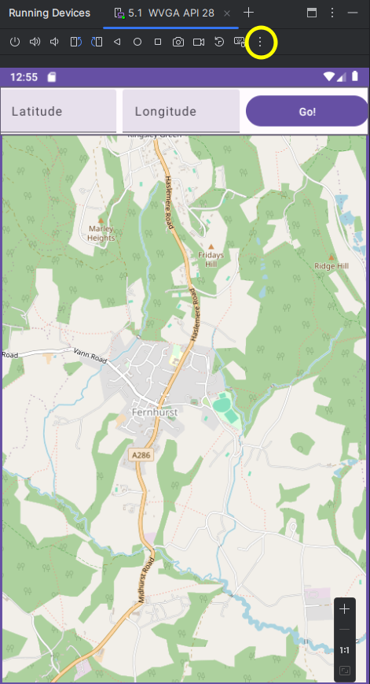
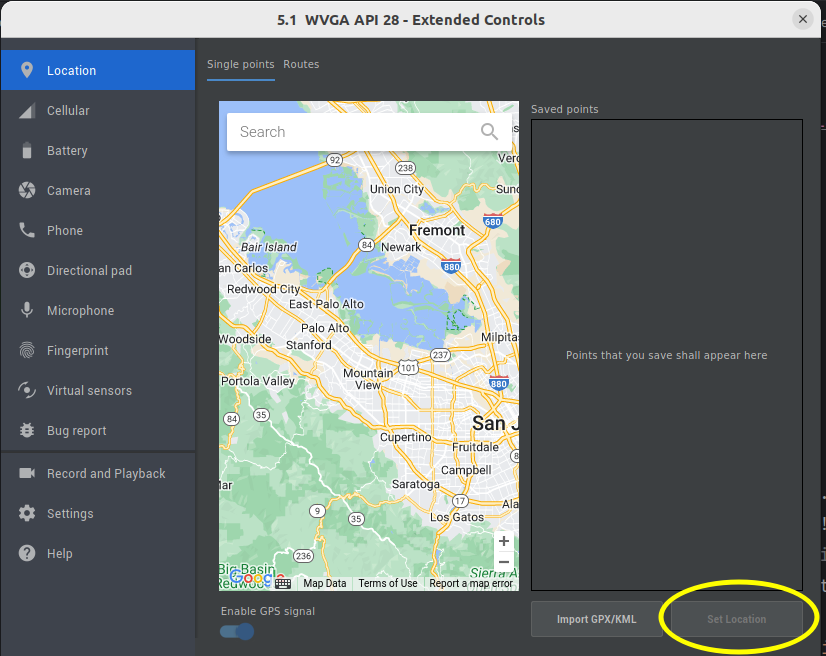
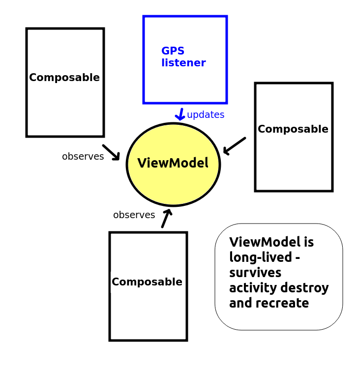

Last week you were very briefly introduced to permissions. Apps need to be granted permissions to perform sensitive operations. Sensitive operations can include:
<application> tag. For example, to specify that we need internet permission, we
would add the line:
<uses-permission android:name="android.permission.INTERNET" />
Before Android 6, permissions were specified at install time, so a user was informed what permissions an app needed when they installed the app. However, this model had some disadvantages. It is not very flexible; a user might want to use some permissions but turn others off. For example, if a user is installing a mapping app which allows the user to take photos, they might wish to use the GPS but not the camera, for privacy reasons.
Android 6 (API level 23) uses a runtime permissions model, in which permissions can be turned on and off at run time, rather than install time. With Android 6 permissions, you can grant an app certain permissions but not others, at run time. You can also turn permissions on and off at any time via the device's Settings.
To enforce the use of Android 6 permissions, the targetSdkVersion of your app must be at least 23; we looked at targetSdkVersion last week.
Certain permissions in Android are more sensitive than others, these are called dangerous permissions. Dangerous permissions include location, using the GPS (for privacy reasons), camera (even more so) and file I/O (because of the risk of a rogue app reading private data on your device). It is these dangerous permissions which require runtime permission checking, and these permissions which can be turned on or off in the Settings.
Less sensitive permissions, such as internet, can be done purely via the manifest, as before; these do not need runtime permission checking.
See this documentation on the Android site
As well as granting the permission at runtime, a user can grant permission by going into the phone's Settings, selecting "Apps" and then the appropriate app, and then turning the appropriate setting on. A user can also revoke the permission through the Settings.
You use the checkSelfPermission() call for this, though it is recommended to use ContextCompat.checkSelfPermission() from the Jetpack AppCompat library, to allow your code to run on older devices.
Here is an example of checking for the ACCESS_FINE_LOCATION (listen to GPS) permission. This is in a custom function called checkPermissions(), which would be called from onCreate().
fun checkPermissions() {
val requiredPermission = Manifest.permission.ACCESS_FINE_LOCATION
if(checkSelfPermission(requiredPermission) == PackageManager.PERMISSION_GRANTED) {
startGPS() // a function to start the GPS - see below
} else {
// Request the permission (see below for code)...
}
}
Note how checkSelfPermission() takes the permission we are interested in (ACCESS_FINE_LOCATION) as an argument.
This method will return one of these constants:
PackageManager.PERMISSION_GRANTED if the permission has already been granted by the user;PackageManager.PERMISSION_DENIED if not.If checkSelfPermission() returns PackageManager.PERMISSION_DENIED, then you should request that permission from the user in your code. This is done using a launcher. A launcher is an Android API class which is used to launch a task which requires user interaction (such as a permissions dialog), and runs a callback function (typically a lambda function) once the user has performed the required interaction. The launcher is created with registerForActivityResult() with parameters of ActivityResultContracts.RequestPermission(), plus the lambda.
val permissionLauncher = registerForActivityResult(ActivityResultContracts.RequestPermission()) { isGranted ->
if(isGranted) {
startGPS() // A function to start the GPS - see below
} else {
// Permission not granted
Toast.makeText(this, "GPS permission not granted", Toast.LENGTH_LONG).show()
}
}
permissionLauncher.launch(requiredPermission)
Note how in this example, we create a launcher called permissionLauncher and specify a lambda function which takes one parameter, isGranted. This lambda will run as soon as the user either grants or denies the permission. The isGranted parameter will be either true or false, as a result. So the lambda will include logic to start the GPS (if the permission was granted) or inform the user that the permission was not granted (if not). Note how we use a Toast here - a small popup message which appears on the screen above the UI. Toast takes this form:
Toast.makeText (this, message, length).show()
this refers to the activity. length can either be
Toast.LENGTH_SHORT or Toast.LENGTH_LONG.
We actually launch the launcher with :
permissionLauncher.launch(requiredPermission)
We can request multiple permissions with ActivityResultContracts.RequestMultiplePermissions() and then pass an array of the required permissions to the launcher, e.g:
permissionLauncher.launch(arrayOf(Manifest.permission.ACCESS_FINE_LOCATION, Manifest.permission.CAMERA))
Having covered runtime permission handling, we are now going to look at a key piece of functionality which uses it; obtaining your current location. Many of the most interesting mobile apps are location-based apps, in other words, the app is sensitive to the user's location on earth. We might, for instance, have an app which displays a map of your current location. Or an app which looks up the nearest pubs, bus stops or railway stations. Such apps send the user's location to a web server, which then delivers data near that location. Most smartphones contain a GPS chip which obtains the device's location by communicating with Global Positioning System (GPS) satellites: the same mechanism used in car satnav systems. So, since location is so important in mobile app development, we are going to look at it now.
There are important ethical issues when it comes to location. Potentially, a malicious app could gather your location and send it to a server with a user's personal details, which could allow the user to be tracked without their consent. For this reason, location tracking is treated as a dangerous permission and must be granted by the user at runtime.
Furthermore, it is recommended to create an explicit privacy policy on your app's website (which can be linked to from Google Play) which spells out to users why the app needs location information and what will be done with it.
There are two permissions for location: ACCESS_FINE_LOCATION for accurate (GPS) position, and ACCESS_COARSE_LOCATION (for less-accurate (wifi and cell-tower) position. As for any permission (dangerous and non-dangerous), you need to add the appropriate permission to the manifest:
<uses-permission android:name="android.permission.ACCESS_FINE_LOCATION" />
This incomplete example shows how to obtain your location. Note
that a fully-working example would also need to check whether the ACCESS_FINE_LOCATION permission has been granted at runtime, and request it if not, using the technique described above.
package com.example.nickw.location
class MainActivity : ComponentActivity(), LocationListener {
fun startGPS() {
val mgr = getSystemService(LOCATION_SERVICE) as LocationManager
mgr.requestLocationUpdates(LocationManager.GPS_PROVIDER, 0, 0f, this )
}
override fun onLocationChanged(location: Location) {
Toast.makeText(this, "Latitude: ${location.latitude}, Longitude: ${location.longitude}", Toast.LENGTH_LONG).show()
}
override fun onProviderEnabled(provider: String) {
Toast.makeText(this, "GPS enabled", Toast.LENGTH_LONG).show()
}
override fun onProviderDisabled(provider: String) {
Toast.makeText(this, "GPS disabled", Toast.LENGTH_LONG).show()
}
// Deprecated at API level 29, but must still be included, otherwise your
// app will crash on lower-API devices as their API will try and call it
override fun onStatusChanged(provider: String, status: Int, extras: Bundle) {
}
}
This code sample shows how to use the Location API. It will listen to the device's GPS and update the main content view with the current latitude and longitude (position on earth). So how does it work? The key thing is that there are three main components involved in obtaining your location:
To go through the code above in more detail:
val mgr: LocationManager = getSystemService(Context.LOCATION_SERVICE)
mgr.requestLocationUpdates(LocationManager.GPS_PROVIDER, 0, 0f, this)Note the parameters:
public class MainActivity : AppCompatActivity(), LocationListener.
In a LocationListener, you must provide four methods to handle different location events:
TheonLocationChanged() method takes a single parameter - a Location object representing our current location. It has two properties, latitude and longitude, for getting the actual latitude and longitude. So, in this app, we simply display the current latitude and longitude with a Toast.
If you do not have a real device, or are located indoors (as you will probably be during the class; indoor GPS signals are not reliable) it is possible to test it in a development environment (with a GPS provider) by sending "virtual" locations to the emulator.
This is quite straightforward. Click on the three dots (...) at the top of the controls of the virtual device:

This will take you to a dialog showing a map, by default located in Silicon Valley, California. You can change location by moving the map or searching for locations
and then clicking "Set Location. This will send a virtual GPS signal to the device, containing the latitude and longitude entered.

How might you set the position of an osmdroid map to the GPS position, or even simply display the latitude and longitude on the UI? This is a little tricky as the map position is stored in state in a Compose application, as we saw two weeks ago, and state cannot be accessed outside composables (the GPS code will be outside our composables). How then can we communicate the GPS coordinates to the state variable of a composable?
The answer is to use a view model with live data.
A common aim in object-oriented programming is to make all classes as concise, and focused on one thing, as possible. This makes the classes smaller and easier to understand, and thus maintain. A small, tightly-focused class (focused on one particular thing) has high cohesion. Achieving high cohesion is well-known good software engineering practice, as you should know from OODD.
However, in Android development, if we are not careful our activities can quickly become very large and "bloated", and end up containing a lot of variables hoding the application's data and methods to manipulate that data. Thus they have low cohesion, as they are trying to do too many things. It would be better to try and separate out the activity from its data so that the activity only manages core operations (such as onCreate() and setting up the UI) and have another class which stores the data.
Luckily we can do this quite easily with Android thanks to the use of a ViewModel (see the Android documentation). What is a ViewModel? It's an object which holds the data which needs to be displayed by the application, and is responsible for "preparing data for the UI" (Android docs), as part of the Model-View-ViewModel (MVVM) architecture, which we will return to in the database topic.
As well as enabling higher cohesion, using a ViewModel in Android has the advantage that it is persistent throughout the lifetime of the application, even if other components such as activities are destroyed. An important feature of Android that might not be obvious is that an activity is destroyed and re-created when it's rotated. This can cause difficulties if you want to preserve data; by default, all data stored in an activity will be destroyed when it's rotated, as it belongs to a particular instance of the activity. If you use a ViewModel instead, the data will be preserved and will be accessible by the activity when it is re-created.
Furthermore, use of a ViewModel allows data to be updated from non-UI parts of your application (e.g. the Location API as seen above) and then observed from your UI, such as Jetpack Compose. In this way, Compose UIs can be updated when data external to them, such as GPS location or a database, updates.

Creating a ViewModel is quite easy. We need to ensure the lifecycle-runtime-ktx Jetpack library into our build.gradle dependencies, e.g:
implementation 'androidx.lifecycle:lifecycle-runtime-ktx:2.5.1'and create a class inheriting from
androidx.lifecycle.ViewModel.
package com.example.viewmodel1
import androidx.lifecycle.ViewModel
class TestViewModel : ViewModel() {
var firstName = ""
var lastName = ""
}
This is creating a simple ViewModel to store someone's first and last name.
We then need to initialise the ViewModel from an Activity. The example below shows how to do this:
class MainActivity :AppCompatActivity() {
val viewModel : TestViewModel by viewModels()
// ... class continues ...
Note how we declare a variable viewModel within our activity, of class TestViewModel (our ViewModel class shown above). Note also how we initialise it with a delegate (see last week).
Later on, at any point, we can update the ViewModel's data, e.g.
viewModel.apply {
firstName = "Fred"
lastName = "Jones"
}
Clearly this is a very simple example, but for more complex apps, which need to store and display large amounts of data, a ViewModel makes sense. Furthermore, even in this simple example, a ViewModel can be advantageous, as the data remains in memory even when the device is rotated. If we simply stored the first name and last name in the activity, it would be lost when the device is rotated, as the activity (and all its data) is destroyed and re-created. The ViewModel by contrast is stored independently to the activity in memory.
Commonly, ViewModel is used together with LiveData. A ViewModel can hold LiveData which is observed by an Observer. When the data changes, the Observer callback function - a lambda, typically - receives the altered data and uses it to update the UI. In a Compose application, a state variable would be updated with the altered live data from the view model.
We will use location data as our example of LiveData.
The latitude and longitude (from the Location API) will be stored in a ViewModel and made available as LiveData which the UI can then observe (so for example, a map can update with the latitude and longitude contained within the LiveData.)
First the ViewModel, which contains a LatLon object and a LiveData object wrapping that LatLon:
data class LatLon(val lat: Double, val lon: Double) // our LatLon class
class LatLonViewModel: ViewModel() {
var latLon = LatLon(51.05, -0.72)
set(newValue) {
field = newValue
latLonLiveData.value = newValue
}
var latLonLiveData = MutableLiveData<LatLon>()
}
Note how we use a custom setter with the latLon object within the view model (we introduced these in topic 5). In the custom setter we update the live data as well as the latLon object itself. This ensures that the live data tracks the latLon object itself and keeps in sync with it.
latLonLiveData.value = newValue
We can then update the latLon in the view model from our onLocationChanged(), when the GPS location changes:
latLonViewModel.latLon = LatLon(location.latitude, location.longitude)
We observe the LiveData from our UI by calling its observe() method. observe() expects either an Observer object, or a lambda which will run whenever the live data changes:
latLonViewModel.latLonLiveData.observe(this) {
// inside the lambda, "it" will be the LatLon being observed; use it to update the UI
}
This topic is relatively easy compared to some of the recent topics but is important to know if you are developing any sort of geographically-aware app: the ability to add markers to a mapping application. Many geographically-aware apps show points of interest as markers on the map.
The incomplete example below (only relevant code is shown) demonstrates how to add markers to a map:
import org.osmdroid.views.overlay.Marker // needed for marker
AndroidView (
factory = { ctx ->
Configuration.getInstance()
.load(ctx, PreferenceManager.getDefaultSharedPreferences(ctx))
val map1 = MapView(ctx).apply {
setMultiTouchControls(true)
setTileSource(TileSourceFactory.MAPNIK)
controller.setZoom(14.0)
}
val marker = Marker(map1)
marker.apply {
position = GeoPoint(51.05, -0.72)
title = "Fernhurst, village in West Sussex"
}
map1.overlays.add(marker)
map1 // last statement is return value of lambda
}
// ...
}
Note what we are doing here:
Marker and passing our map object into it:
val marker = Marker(map1)
apply() to set various properties of the Marker:
marker.apply {
position = GeoPoint(51.05, -0.72)
title = "Fernhurst, village in West Sussex"
}
title will appear in a popup when the user presses the marker.map1.overlays.add(marker)
So far we have used the built-in osmdroid marker. However we can use custom markers for our app. Here is how we do this :
marker.apply {
icon = getDrawable(R.drawable.marker)
}
Note how the we use the method getDrawable().
This is an object of type Drawable representing the marker icon. We obtain a Drawable by supplying the resource ID R.drawable.marker as a parameter to getDrawable(). The resource ID
R.drawable.marker points to an image marker.png
in the drawable
folder (the folder storing drawables, i.e. images and icons)
within the res folder of the project.
Text composables. When the GPS position updates, the Text composables should update. You will need to use runtime permission checking, the Location API, and a ViewModel with LiveData.ViewModel as a list of items and make them available as LiveData. Observe the LiveData from your UI and add markers for each point of interest in the LiveData.
map.overlays.clear()